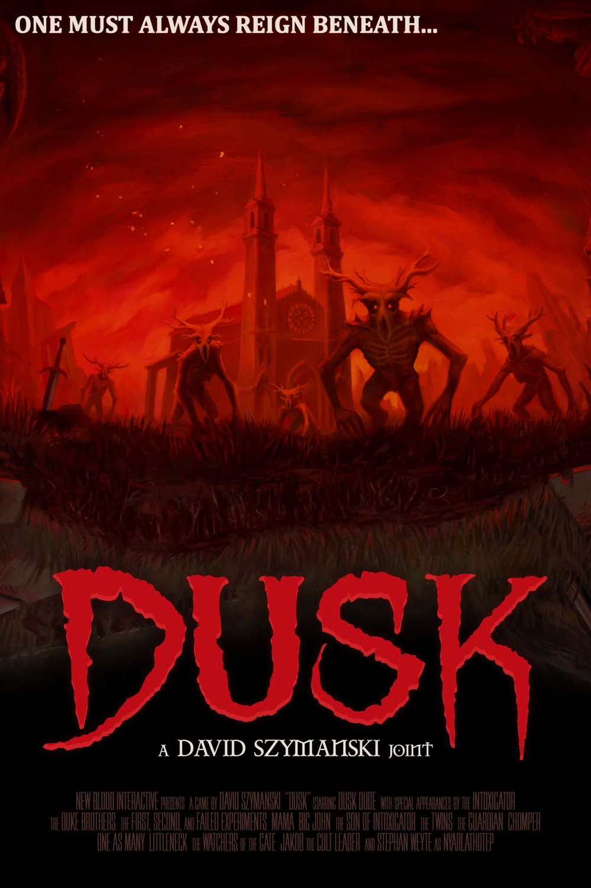
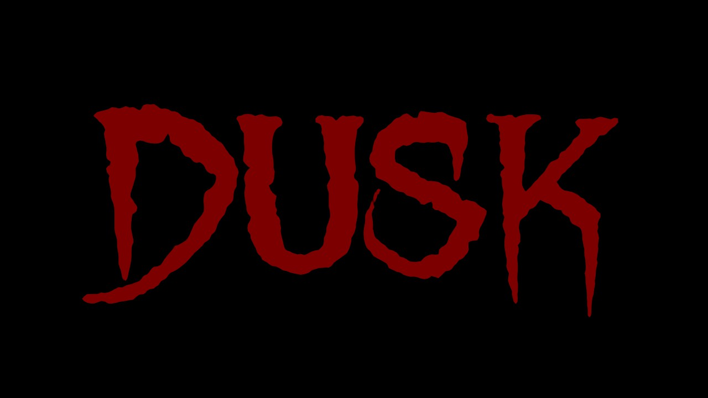
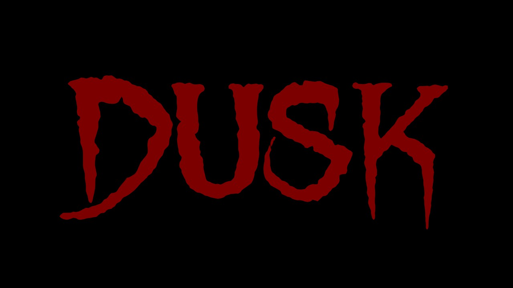

Dusk takes place in and around the fictitious rural town of Dusk, Pennsylvania. A huge network of Lovecraftian ruins are discovered underneath a section of farmland, which attracts the attention of the government. Military personnel and scientists establish research labs and factories in the town in an attempt to harness the magic of the ruins. Much of the research team soon fall victim to a series of demonic possessions and industrial disasters, which force the remnants of the team out of the town. A large perimeter wall is built around the town, sealing it off from the outside world. The player takes the role of a nameless treasure hunter ("DuskDude" or "The Intruder"), who's heard rumors that hidden riches exist within the sealed town. The treasure hunter is apprehended by the town's denizens, brought to a secluded farmhouse, and propped onto a meathook.

The Foothills is the first episode in DUSK. It features 11 levels (10 normal, 1 secret.). All the levels were mainly designed by the games creator, David Szymanski. Each level has a distinct setting but a shared theme across the episode, derelict farms or industrial areas, with the exception of E1M9 which is a city setting.
The Facilities is the second episode in DUSK. It features 11 levels (10 normal, 1 secret.). All the levels were mainly designed by the games creator, David Szymanski. Each level has a distinct setting but a shared theme across the episode, military complexes or heavy industrial zones, with the exception of E2M9 and E2M10, which are set in excavated Ruins.
The Nameless City is the third episode in DUSK. It features 11 levels (10 normal, 1 secret.) All the levels were mainly designed by the games creator, David Szymanski. Each level has a distinct setting but a shared theme across the episode, lovecraftian cathedrals and complex ungerground tunnels with the exception of the last few levels as you delve deeper into the rabbit hole.
The Cult
The Cult is made up of several inhabitants of the rural backwoods along the outskirts of DUSK, Pennsylvania. Their organization is led by a single leader, who must prove that they are worthy of leading by defeating the previous cult leader in a duel. The Cult's practices are mainly centered around worship of the Lovecraftian horror Nyarlathotep (and possibly even Shub-Niggurath). Cult members are extremely zealous and are prejudice against outsiders and non-believers. They believe that all who are not part of their faith should be killed on sight, including protagonist, Duskdude.
Members of the Cult make their presence known through the usage of their symbol, which is displayed in several locations throughout the game and appears on the robes of all Mages, and Wizards. Some members seem to favour the use of tall, pointed hoods as part of their dress, though whether this is required for their faith is unknown. Additionally, the Cult members have various framed photographs of their leader in their homes and businesses.
The Military
The Military appears to be the remains of either the United States Military or a private military corporation. Lore suggests that they were tasked with investigating the strange events below the town of DUSK through extensive mining. Thus, the military built extensive facilities on the outskirts of DUSK in order to better find what was buried below the town. However, the power of what lay beneath the town overpowered most of them, corrupting them. Some members of the military are possibly attempting to resist possession, such as Big John.
Members of the Military faction still retain some of their former tactics, as is demonstrated by the chatter of the Possessed Soldiers. They feature upgraded and augmented units, most of which are technological fusions with human flesh. Their research into these stronger units seems to be backed by teams of Scientists, whose research experiments involve testing on the Demons. In certain levels such as E2M5: The Escher Labs, enemies such as the Wendigo can be seen in biological storage tanks. The Scientists possibly experimented with different monsters in order to create their own breed of units to assist in the mining projects and for defense.
The Demons
The Demons are creatures that come from the alternate reality in The Nameless City. They come in many various forms, including humanoids, amalgamations, and possessed animals. Some types of these enemies seem to be made to directly affect the protagonist, such as the Horrors. Possessed animals, such as the Black Phillips and Rats, appear to be animals that have become corrupt by Cultist influences. Ultimately, all of these enemies appear to be borne from Nyarlathotep or are servants to his cause.

 
